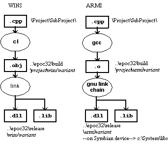

|
| |
There are fundamentally two types of DLL target—static
interface DLLs and polymorphic interface DLLs. Building either type of DLL
target generates two files, the compiled DLL with a .dll extension
and an import library with a .lib extension. To use the functions
provided by a DLL, a client program compiles with the .h file
#included and links against the .lib file. The
.dll file contains the executable code that is called at run-time.
The .lib import library for polymorphic DLLs is never used for
reasons discussed in the DLL guide.
In EPOC a special case also exists, the epocexe target
type which is necessary in rare cases because of the single process nature of
the WINS implementation of EPOC.
The toolchains used to deliver DLL project in WINS and ARM are shown below:

Under WINS, the C++ source is compiled to object files in the build
directory; these are then linked into the release directory. You must run an
executable program to invoke this DLL. Other programs may be built to use the
DLL, by linking against the .lib which was built with the
DLL.
Under ARM, the C++ source is compiled using GNU C++, and then linked
into the release directory. The tools ensure that all DLLs for ARM are linked
by ordinal, so as to minimise their size. You may transfer the DLL to a target
machine, along with suitable programs to allow it to be executed. Leave the
.lib in the release directory, so you can build other programs
which use this DLL.
The build process hides much of this complexity, and is the similar for all types of DLL—see the linked topic below. The following sections discuss the special configuration issues associated with building for DLL targets.
How to use the Symbian build process
Dynamically Loading Link Libraries API
Frameworks, libraries and DLLs
A static interface DLL represents an interface which is defined to
its clients by one or more headers for use at compile time, and an import
library (.lib) for use at link time. Then, when a client
executable is loaded at run-time, the loader notes that it requires the static
interface DLL to be available.
The loader either loads the DLL or, if it is loaded already, attaches the new client to it. Conventionally, the DLL is identified by name only.
In EPOC, all static interface DLLs must have a uid2 of
0x1000008d.
The particular static interface DLL is then identified by name and
by uid3.
If a DLL called helloview.dll is built with
uid3=0x10000252, then the name used in the import
library for non-Win32 builds of EPOC is helloview[10000252].
The EPOC loader loads the helloview.dll, and checks
that its UID is 0x10000252. If the uid3 in the DLL
does not match, then the load fails.
A static interface DLL project file must specify the correct target type and UID:
Specify the TARGETTYPE line as:
TARGETTYPE dll
This implicitly specifies UID1.
Specify the UID for the DLL in a UID line:
UID 0x1000008d
UID3.
An example of the mmp project file for a static DLL
is given below — CreateStaticDLL.mmp.
TARGET CreateStaticDLL.dll
TARGETTYPE dll
UID 0x1000008d 0x10004268
SOURCEPATH .
SOURCE CreateStaticDLL.cpp
USERINCLUDE .
SYSTEMINCLUDE \Epoc32\include
LIBRARY euser.lib
EXPORTUNFROZEN
|
A polymorphic DLL represents an interface defined with a gate function and an abstract class with at least one virtual function.
The polymorphic DLL exports the gate function at ordinal 1, which typically constructs a concrete class derived from the abstract interface. The virtual function is then called, and the functions of the class are available.
Examples of polymorphic DLLs in EPOC include device drivers, GUI application programs, and many more.
Each type of interface should specify its own UID, which is used as
uid2 for the polymorphic DLL.
The function responsible for loading a polymorphic DLL should check
that its uid2 corresponds with the expected interface type.
For polymorphic DLLs, the interpretation of uid3
depends on the interface type. uid3 may not be required by all
interfaces.
The application architecture mandates that uid3
identify the particular application: the uid3 is used to relate an
application program to its document files.
The build process for a polymorphic DLL produces an import library
(.lib), but it is not used.
The project file for a polymorphic DLL must specify the correct target type and UIDs:
Specify the TARGETTYPE line as:
TARGETTYPE dll
This implicitly specifies UID1. Note that a GUI
application is a special type of polymorphic DLL and has a different target
type.
Specify the UID for the DLL in a UID line:
UID
UID2
[UID3].
The UID2 value is defined by the interface which is being implemented. Some types of polymorphic DLL also require a third UID, but, if so, its meaning is defined by the DLL.
The following table summarises the UID usage for the common system-defined polymorphic DLLs:
|
An example of the makmake project file for a
polymorphic DLL is given below PolymorphicDLL1.mmp.
TARGET PolymorphicDLL1.dll
TARGETTYPE dll
UID 0x10004262 0x10004264
SOURCEPATH .
SOURCE PolymorphicDLL1.cpp
USERINCLUDE .
USERINCLUDE ..\UsingDLLs
SYSTEMINCLUDE \Epoc32\include
LIBRARY euser.lib
EXPORTUNFROZEN
GUI applications are a special case of a polymorphic interface DLL. An example of how to build this type of DLL is given in the linked topic.
How to build for a GUI APP target
|
Released versions of DLLs should freeze their exports, so as to
ensure the backward compatibility of new releases of a library. While you are
developing a DLL, you can use the exportunfrozen keyword in the
project's mmp file, to tell the build process that exports are not yet frozen.
When you are ready to freeze, remove the exportunfrozen keyword,
and supply a .def file listing the exports.
To create a .def file, build the project in the normal
way. A warning will be generated to the effect that the frozen
.def file does not yet exist. Once the project has been built you
can freeze it by calling the freeze target in the makefiles. You
can do this with abld by using:
> abld freeze
or directly through nmake by:
> nmake -f <makefile> freeze
Either method will create the frozen .def file
containing the project’s exported functions. Note that all ARM platforms
share a common .def file, but that WINS has a different
.def file.
Once the project is frozen, regenerate the makefiles so that the
import library will be created directly from the frozen .def file.
The project can be frozen in this way even if the
exportunfrozen statement is specified, but the import library will
be created as a side-effect of linking rather than from the frozen
.def file, and this import library will be created whether the
project is frozen or not.
New exports can be added to the frozen .def file by
calling the freeze target in the makefiles once the project has
been built with the new exports incorporated.
The freeze target calls a tool, efreeze,
to compare the frozen .def file, if it exists, with the one
generated by the two-stage link process in directory:
\epoc32\Build\absolute_path_to_mmp_file\mmp_basename\platform\
efreeze checks that the frozen exports are all present
and correct in the generated .def file, and appends any new
exports to the end of the frozen .def file.
|
WINS is single process. Therefore some projects, which build a
.exe under ARM to be loaded at run-time, must build a
.dll under WINS. For such purposes, the .dll is a
kind of polymorphic DLL whose first entry point does just the same thing as the
.exe’s main entry point would do. Such projects are built
as an .exe under ARM and a .dll under the Emulator.
The build target epocexe creates an executable that
can be launched from the shell. It produces an executable program that exports
no functions under a multi-process platform (ARM), and a DLL which is linked
with a function TInt WinsMain() exported as ordinal 1 under a
single-process (WINS) platform.
Note that in EPOC R5 releases and before, the exedll
target was commonly used for this purpose. In later versions,
exedll should only be used for special EXE programs that need to
export functions to client DLLs.
Copyright ©2002 Symbian Ltd. 6.1-00174 |
|